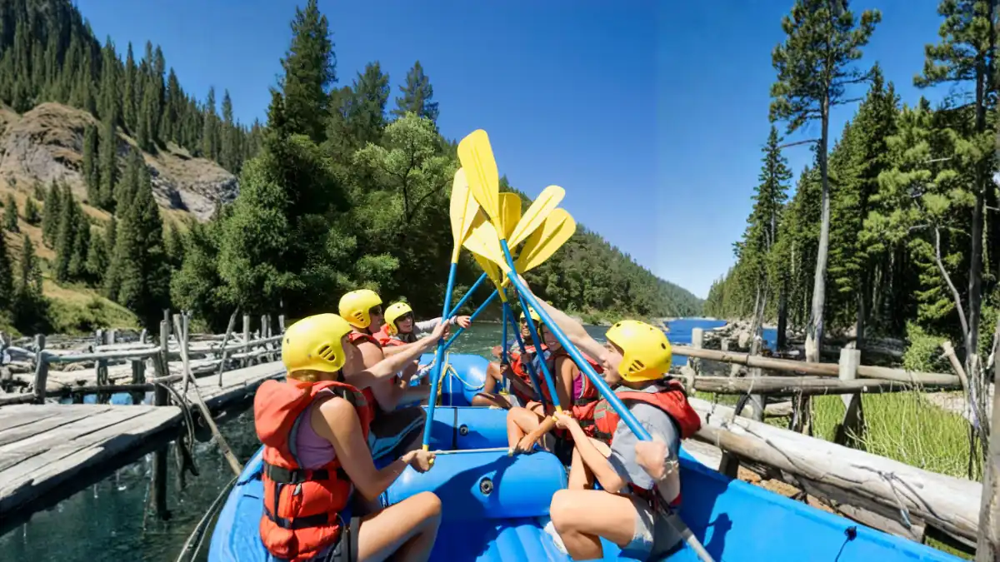

1. Dilema Tim HRD: Fun Games Ceria atau Team Building yang Serius?
Perbedaan mendasar antara Paket Team Building Perusahaan dan Paket Fun Games di Batu Malang terletak pada tujuan akhirnya: Team Building dirancang untuk menyelesaikan hambatan performa kerja nyata (seperti ego sektoral, miskomunikasi, krisis kepemimpinan) melalui simulasi tantangan bertahap dengan analisis *debriefing*; sedangkan Fun Games dirancang murni untuk rekreasi, mencairkan ketegangan (*ice breaking*), dan membangun keakraban tanpa beban evaluasi kinerja.
Banyak panitia outing atau divisi People & Culture keliru menganggap kedua istilah ini sama. Akibatnya, ada perusahaan yang menginginkan perubahan budaya kerja dan resolusi konflik internal, namun hanya memesan paket Fun Games 3 jam. Sebaliknya, ada divisi yang hanya ingin rekreasi melepas penat setelah tutup buku tahunan, namun justru diberikan simulasi Team Building berat yang menguras emosi.
Agar investasi waktu dan biaya perusahaan Anda tepat guna, mari bedah perbandingan 6 dimensi parameter antara kedua jenis paket tersebut.

Apa Itu Outbound? Pengertian, Modul & Manfaat untuk Tim Perusahaan
Kupas tuntas filosofi experiential learning dan siklus pembelajaran Kolb untuk memaksimalkan kapasitas tim.
Di kawasan wisata Kota Batu dan Malang, simulasi team building mendalam umumnya diselenggarakan di Wana Wisata Coban Rondo atau Kusuma Agrowisata, sedangkan fun games keluarga sangat diminati di Selecta bersama tim Vendor Outbound Batu Malang.
2. Matriks Komparasi 6 Parameter: Team Building vs Fun Games
| Dimensi Parameter | Outbound Fun Games | Outbound Team Building |
|---|---|---|
| 1. Sasaran Utama (*Core Objective*) | Penyegaran mental (*refreshing*), keceriaan, mencairkan kebekuan (*ice breaking*) antar-staf. | Peningkatan kompetensi kerja: *leadership*, *strategic thinking*, resolusi konflik, dan *trust*. |
| 2. Tingkat Kesulitan Simulasi | Rendah (*Low Impact*), aturan mudah, menitikberatkan pada kelucuan dan kekompakan spontan. | Menengah hingga Tinggi (*Medium to High Impact*), menuntut analisis logika, strategi, dan pembagian tugas presisi. |
| 3. Peran Sesi Debriefing | Singkat atau bersifat pengumuman pemenang & yel-yel kelompok terbaik. | Mendalam di setiap sesi, mengupas dinamika emosi, hambatan komunikasi, dan *action plan* untuk kantor. |
| 4. Kompetensi Fasilitator | Game Master dinamis, humoris, dan pandai menghidupkan suasana (*crowd builder*). | Master Facilitator bersertifikasi BNSP dengan keahlian psikologi kelompok & *experiential learning*. |
| 5. Durasi & Format Acara | Cukup 1 Hari (*Half-day* 3-4 jam atau *Full-day* 6 jam) di lapangan rumput asri. | Idealnya 2 Hari 1 Malam (2D1N) atau 3 Hari 2 Malam (3D2N) agar perenungan insight lebih maksimal. |
| 6. Target Peserta Ideal | Acara gabungan seluruh karyawan, Family Gathering lintas usia, atau perayaan ulang tahun kantor. | Tim divisi khusus, jajaran manajerial/supervisor, atau unit kerja yang sedang menghadapi target besar. |

Dalam Team Building, setiap tantangan menguji bagaimana tim menyusun strategi sebelum bertindak dan mengevaluasi kegagalan secara objektif.
3. Kapan Perusahaan Wajib Memilih Paket Team Building?
Pilihlah Paket Team Building Corporate jika organisasi Anda mengalami salah satu indikator berikut:
- Terdapat Gap Komunikasi Antar-Generasi atau Antar-Divisi: Munculnya 'silo mentality' di mana masing-masing bagian hanya memikirkan target divisinya sendiri.
- Penyatuan Dua Tim Pasca Merger / Restrukturisasi: Karyawan baru dan lama membutuhkan adaptasi cepat untuk menyamakan visi dan ritme kerja.
- Persiapan Menghadapi Target Baru yang Agresif: Manajemen ingin membangun daya juang (*grit*), ketahanan mental (*resilience*), dan jiwa pantang menyerah.
- Pengembangan Calon Leader Masa Depan: Membutuhkan modul simulasi terukur seperti Leadership Camp untuk menguji kematangan delegasi dan manajemen risiko.
4. Kapan Fun Games Menjadi Pilihan Terbaik?
Pilihlah Paket Fun Games Gathering jika kondisi acara Anda memenuhi kriteria ini:
- Acara Bersama Keluarga Karyawan: Kegiatan seperti Family Gathering yang melibatkan anak-anak dan pasangan membutuhkan permainan yang aman, inklusif, dan penuh tawa.
- Karyawan Mengalami Kelelahan Kerja (*Burnout*): Tim baru saja menyelesaikan proyek besar atau tutup tahunan yang sangat menguras tenaga dan hanya membutuhkan rekreasi santai.
- Keterbatasan Waktu (One Day Event): Acara outbound hanya dialokasikan 1 hari tanpa menginap, digabung dengan acara *sightseeing* wisata ke Malang atau Batu.
- Anggaran yang Terbatas: Fun Games memberikan efisiensi biaya tertinggi per peserta dengan kepuasan keceriaan yang maksimal.

Cara Memilih Vendor Outbound yang Tepat dan Berlegalitas Resmi
Panduan penting memverifikasi izin usaha, standar safety, dan sertifikasi BNSP dari provider outbound.
5. Solusi Cerdas: Menerapkan Skema Hybrid (Fun Games + Team Building)
Banyak klien korporat Vendor Outbound ID memilih skema gabungan (*Hybrid Program*) berdurasi 2 Hari 1 Malam (2D1N) di kawasan Batu atau Trawas. Contoh alur susunan rundown terbaik:
- Hari 1 Pagi (09.00 - 12.00): Sesi Ice Breaking & Fun Games Ceria untuk memecahkan ketegangan awal dan membangun rasa senang.
- Hari 1 Siang/Sore (13.30 - 17.00): Modul Team Building & Strategic Problem Solving bertingkat lengkap dengan sesi debriefing analitis.
- Hari 1 Malam (19.00 - 22.00): Gala Dinner, Awarding Night & Api Unggun untuk momen keakraban emosional.
- Hari 2 Pagi (08.00 - 11.30): Pilihan aktivitas petualangan menyegarkan seperti Rafting Arung Jeram atau Offroad Bromo Jeep sebelum pulang.
Bingung Memilih Skenario yang Pas untuk Kantor Anda?
Konsultasikan profil peserta dan sasaran acara Anda bersama Master Trainer kami. Kami buatkan simulasi rundown dan rancangan anggaran biaya (RAB) gratis dalam 24 jam.
Diskusi via WhatsAppKesimpulan
Rangkuman Keputusan Pengadaan Outbound
Tidak ada paket yang mutlak 'lebih baik'—yang ada adalah paket yang paling sesuai dengan kebutuhan spesifik organisasi Anda saat ini.
- Gunakan Fun Games jika tujuan Anda adalah penyegaran, keakraban keluarga, dan durasi singkat 1 hari.
- Gunakan Team Building jika Anda mengincar transformasi kepemimpinan, pemecahan masalah, dan sinergi kerja jangka panjang.
- Jelajahi opsi paket lengkap kami di Halaman Outbound Perusahaan atau konsultasikan langsung untuk penawaran khusus.
Pertanyaan yang Sering Diajukan (FAQ)

Arby Ardiansyah
Spesialis perancang kurikulum experiential learning dan outbound corporate dengan pengalaman mendampingi ratusan instansi swasta dan BUMN dalam merumuskan format gathering yang efektif dan berdampak.